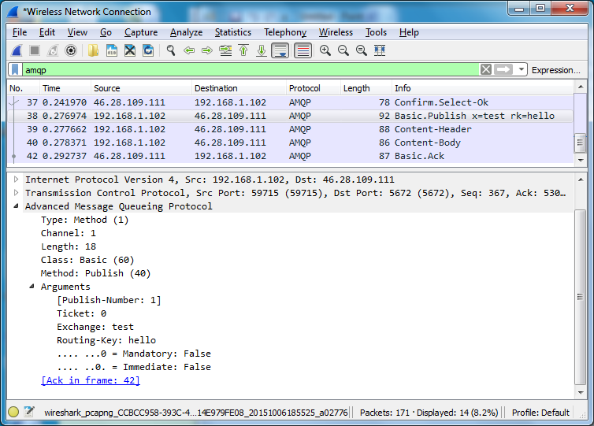

Inspecting AMQP 0-9-1 Traffic using Wireshark
Overview
Wireshark 2.0 contains enhanced support for AMQP traffic inspection and analysis. It can dissect (parse, visualise, filter) AMQP 0-9-1 and AMQP 1.0 traffic, including AMQP 0-9-1 Errata and RabbitMQ Extensions.
Wireshark is based on the same foundation as tcpdump, libpcap, and can be used to inspect pcap traffic capture files taken in a server environment.
Together, tcpdump and Wireshark provide a lot of information explaining what clients (applications) and RabbitMQ nodes do. This information can and should be used to derive insights into system behavior that is difficult to observe otherwise. These tools complement monitoring systems and allow operators and developers troubleshoot a distributed system more efficiently.
Tracing Packages
Packet List provides a summary of protocol frames and methods exchanged by a client and a RabbitMQ node. The Info column indicates the Class and Method (e.g. Basic.Publish) and then the most significant arguments. For example:
- Connection.Open vhost=(vhost)
- Connection.Close reply=(reply-text)
- Channel.Close reply=(reply-text)
- Exchange.Declare x=(exchange-name)
- Exchange.Bind dx=(dest-exchange) sx=(source-exchange) bk=(routing-key)
- Queue.Declare q=(queue-name)
- Queue.Bind q=(queue-name) x=(exchange-name) bk=(routing-key)
- Queue.Delete q=(queue-name)
- Basic.Publish x=(exchange-name) rk=(routing-key)
Packet Details then indicate all arguments of the frame. It also includes dynamically calculated values enclosed in square brackets. This is explained in next section.

Links Between Related Frames
Wireshark analyzes the AMQP 0-9-1 packet flow and displays additional information enclosed in square brackets:
- Arguments of basic.publish include a publish sequence number, which is the sequence number used by Publisher Confirms
- Each acknowledged basic.publish or basic.deliver includes a reference to the frame that contains the corresponding basic.ack or basic.nack frame that acknowledged it (if any).
- Similarly, each basic.ack contains a reference (possibly multiple) to frame(s) that is being confirmed by this Ack
More Metrics
Wireshark automatically highlights AMQP 0-9-1 packets with:
- Connection errors (server-sent connection.close frames) and channel errors (server-sent channel.close frames)
- Returned unroutable messages (basic.return frames)
You may display summary of significant frames in a dedicated dialog. Go to Analyze > Expert Information and possibly apply the display filter:
Inspecting Traffic on TLS-enabled Connections
Wireshark enables you to inspect the AMQPS traffic, however you can decrypt only the traffic that have been encrypted using the RSA keys, excluding the RSA ephemeral and Diffie-Hellman Ephemeral (DHE/EDH) cipher suites. You should set cipher suites used by RabbitMQ and restrict the list to RSA only.
In classic configuration format this would look something like this:
[
{rabbit, [
{ssl_options, [{ciphers, [{rsa,aes_256_cbc,sha256},
{rsa,aes_128_cbc,sha256},
{rsa,aes_256_cbc,sha},
{rsa,'3des_ede_cbc',sha},
{rsa,aes_128_cbc,sha},
{rsa,des_cbc,sha}]}
]}
]}
].
Also, you must supply Wireshark with the private key used to encrypt the data. If a mutual authentication is used, you need to supply both private keys. Go to the Edit > Preferences dialog, select Protocols > SSL and then click Edit the RSA keys list.
- IP Address and Port identify the host that holds the private key, usually the server. A wildcard IP address of 0.0.0.0 and wildcard port of 0 or data can be used.
- Protocol should identify amqp.
- The private key file should be in the PEM or PKCS12 format, possibly protected by a password.
Getting Help and Providing Feedback
If you have questions about the contents of this guide or any other topic related to RabbitMQ, don't hesitate to ask them on the RabbitMQ mailing list.
Help Us Improve the Docs <3
If you'd like to contribute an improvement to the site, its source is available on GitHub. Simply fork the repository and submit a pull request. Thank you!
Copyright © 2007-2021 VMware, Inc. or its affiliates. All rights reserved.
Terms of Use •
Privacy •
Trademark Guidelines •
Your California Privacy Rights •
Cookie Settings